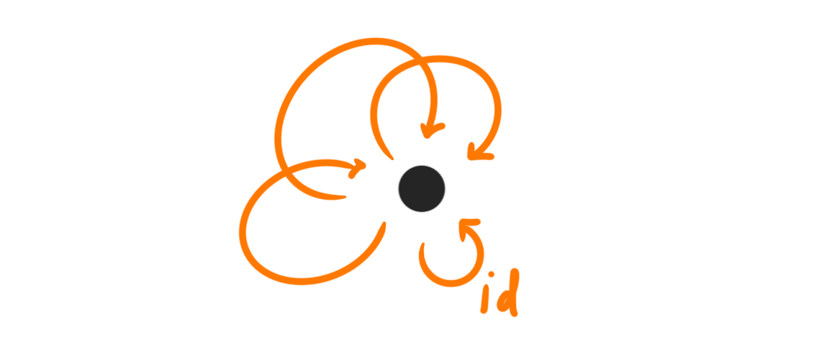
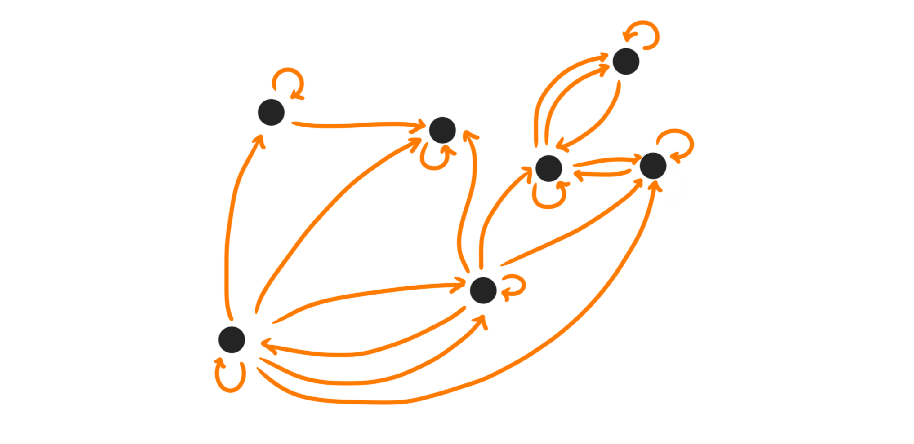
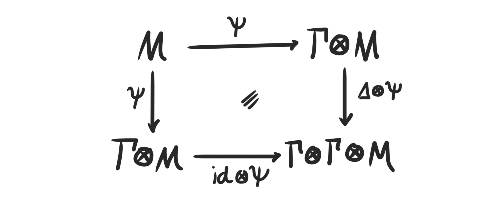

Introduction
In the last blog post we introduced and studied adapted homology theories. Given a stable $\infty$-category $\mathcal{C}$ and $\mathcal{A}$ an abelian category with enough injectives together with a local grading $[1]\colon \mathcal{A}\longrightarrow \mathcal{A}$, an adapted homology theory is a functor
$$ H\colon \mathcal{C}\longrightarrow \mathcal{A} $$
such that $H$ is additive, sends fiber sequences to long exact sequences, sends the suspension $\Sigma$ of $\mathcal{C}$ to the shift $[1]$ of $\mathcal{A}$ and such that we can lift injectives in $\mathcal{A}$ into $\mathcal{C}$ through $H$. We explored which categories $\mathcal{A}$ can actually exist in this setting, and saw that they had to be closely related to the Freyd envelope $A(\mathcal{C})$ of $\mathcal{C}$. More specifically, $\mathcal{A}$ had to be the sheafification of $A(\mathcal{C})$ with respect to a topology on $\mathcal{C}$ determined by $H$, which we called the $H$-epimorphism topology.
In the last section we saw that any homology theory factored through an adapted homology theory, which gave us a way to save our dear favourite example of mod $p$ singular homology theory. Recall that this is a functor
$$ H(–;\mathbb{F}_ p)\colon Sp\longrightarrow Vect_{\mathbb{F}_p} $$
from spectra to vector spaces over $\mathbb{F}_ p$. The adapted factorization produced a category $Comod_{LR}$, into which the functor $H(-;\mathbb{F}_p)\colon Sp\longrightarrow Comod_{LR}$ became adapted. In this blog post we try to figure out what this mysterious category $Comod_{LR}$ is, and how it is related to the title — Hopf algebroids.
Structure maps on mod $p$ homology
Let us start by recalling some information about the homology theory we are interested in. One important fact about homology theories on spectra is that they are representable. The mod $p$ singular homology functor is represented by the Eilenberg-MacLane spectrum of its coefficients, namely $H\mathbb{F}_ p$. This means in particular that we have an equivalence $H_ *(X;\mathbb{F}_ p)\simeq \pi_ *(H\mathbb{F}_ p\wedge X)$ that is natural in $X$. Here $\wedge$ is the wedge product on spectra — the operation that makes $Sp$ into a symmetric monoidal stable $\infty$-category. As a shorthand notation we also often use just $H\mathbb{F}_ {p*}(–)$ for this homology theory.
We noted in the last blog post that $H_*(–;\mathbb{F}_ p)$ has lifts for injectives, but that they don’t lift perfectly. For example $\mathbb{F}_p$ itself is injective, hence has a lift representing the homology theory $Hom(H_*(–;\mathbb{F}_p),\mathbb{F}_p)$. We have
$$ Hom(H_*(–;\mathbb{F}_p),\mathbb{F}_p)\simeq H^*(–;\mathbb{F}_p)\simeq [-,H\mathbb{F}_p]_* $$
as $H\mathbb{F}_ p$ also represents mod $p$ singular cohomology. Hence $H\mathbb{F}_p$ is a lift of $\mathbb{F}_p$, but $H_*(H\mathbb{F}_p;\mathbb{F}_p)\not \simeq \mathbb{F}_p$. We do, however, get a comparison map $H_*(H\mathbb{F}_p;\mathbb{F}_p)\longrightarrow \mathbb{F}_p$, which turns out to be the counit map from the dual Steenrod algebra $A_p$, meaning we have an equivalence $H_*(H\mathbb{F}_p;\mathbb{F}_p)\simeq A_p$. The dual Steenrod algebra is a Hopf algebra, and this is the first of hints towards the contents of the title.
Since $\mathbb{F}_p$ is a ring, its corresponding Eilenberg-MacLane spectrum $H\mathbb{F}_p$ is a ring spectrum, meaning that we have a map $\mu\colon H\mathbb{F}_p\wedge H\mathbb{F}_p\longrightarrow H\mathbb{F}_p$ which we call multiplication and a map $e\colon \mathbb{S}\to H\mathbb{F}_p$ which we call the unit. The unit map gives us two maps from $H\mathbb{F}_p\to H\mathbb{F}_p\wedge H\mathbb{F}_p$, via choosing the first or second copy. Call these $\eta_L$ and $\eta_R$ (for left and right) respectively. More precisely these are maps of the form
$$ \eta_ L \colon H\mathbb{F}_p\simeq \mathbb{S}\wedge H\mathbb{F}_p\overset{e\wedge id_{H\mathbb{F}_p}}\longrightarrow H\mathbb{F}_p\wedge H\mathbb{F}_p $$
and
$$ \eta_ R\colon H\mathbb{F}_p\simeq H\mathbb{F}_p\wedge \mathbb{S}\overset{ id_{H\mathbb{F}_p}\wedge e}\longrightarrow H\mathbb{F}_p\wedge H\mathbb{F}_p. $$
Taking homotopy groups and using the equivalence $\pi_*(H\mathbb{F}_p\wedge \mathbb{S})\simeq H_*(\mathbb{S};\mathbb{F}_p)\simeq \mathbb{F}_p$ gives us two maps $\mathbb{F}_p\rightrightarrows A_p$. In our case of $H\mathbb{F}_p$ these two maps equal, i.e. $\eta_L=\eta_R.$ For other ring spectra these will in general differ, as will become important later. In these cases we also call these maps the source and target maps respectively. It will become clear later why these names occur.
Taking instead mod $p$ homology of the same above map, we get a new map
$$ H_*(H\mathbb{F}_p;\mathbb{F}_p)\longrightarrow H_*(H\mathbb{F}_p\wedge H\mathbb{F}_p;\mathbb{F}_p) $$
which we instead view as a map
$$ A_p\simeq \pi_*(H\mathbb{F}_p\wedge H\mathbb{F}_p)\longrightarrow \pi_*(H\mathbb{F}_p\wedge H\mathbb{F}_p\wedge H\mathbb{F}_p) $$
in order to more easily produce elements. We can also form elements of $\pi_*(H\mathbb{F}_p\wedge H\mathbb{F}_p\wedge H\mathbb{F}_p)$ from elements in $\pi_*(H\mathbb{F}_p\wedge H\mathbb{F}_p)$ in another way, by doing the following. Choose two classes $[\alpha]$ and $[\beta]$ in $\pi_*(H\mathbb{F}_p\wedge H\mathbb{F}_p)$ represented by maps $\mathbb{S}\overset{\alpha}\longrightarrow H\mathbb{F}_p\wedge H\mathbb{F}_p$ and $\mathbb{S}\overset{\beta}\longrightarrow H\mathbb{F}_p\wedge H\mathbb{F}_p$ respectively. We can form a map
$$ \mathbb{S}\simeq \mathbb{S}\wedge \mathbb{S}\overset{\alpha\wedge \beta}\longrightarrow (H\mathbb{F}_ p\wedge H\mathbb{F}_p)\wedge (H\mathbb{F}_p\wedge H\mathbb{F}_p)\overset{id_{H\mathbb{F}_p}\wedge \mu \wedge id_{H\mathbb{F}_p}}\longrightarrow H\mathbb{F}_p\wedge H\mathbb{F}_p\wedge H\mathbb{F}_p $$
which represents a class in $\pi_*(H\mathbb{F}_p\wedge H\mathbb{F}_p\wedge H\mathbb{F}_p)$. Hence we have a map
$$ \pi_*(H\mathbb{F}_p\wedge H\mathbb{F}_p)\otimes_{\mathbb{F}_p}\pi_*(H\mathbb{F}_p\wedge H\mathbb{F}_p)\longrightarrow \pi_*(H\mathbb{F}_p\wedge H\mathbb{F}_p\wedge H\mathbb{F}_p) $$
Since $\pi_*(H\mathbb{F}_p\wedge H\mathbb{F}_p)\simeq A_p$ this a map $A_p\otimes A_p\longrightarrow \pi_*(H\mathbb{F}_p\wedge H\mathbb{F}_p\wedge H\mathbb{F}_p)$. It turns out that this map is an equivalence! In fact, a more general statement is true, which we now prove.
Since $H_*(–;\mathbb{F}_p)\simeq \pi_*(H\mathbb{F}_p\wedge –)$ is a homology theory, it is natural in its variable. The same holds for $\pi_*(H\mathbb{F}_p\wedge H\mathbb{F}_p\wedge –)$. Hence we also get a map
$$ A_p\otimes H_*(X;\mathbb{F}_p)\longrightarrow \pi_*(H\mathbb{F}_p\wedge H\mathbb{F}_p \wedge X) $$
for any $X$.
Theorem: The above map is an equivalence of homology theories.
Proof: First off we notice that since $\mathbb{F}_p$ is a field we know that $A_p$ is flat as a module over it, as it is free. Hence tensoring with $A_p$ is an exact functor. Composing a homology theory with an exact functor is again a homology theory, as discussed in the recent blog post about universal homology theories. As the map between them is natural we know the map is a morphism of homology theories. We can then check their equivalence on the sphere spectrum $\mathbb{S}$. We get
$$ A_p\otimes_{\mathbb{F}_p} H_*(\mathbb{S};\mathbb{F}_p)\simeq A_p\otimes_{\mathbb{F}_p} \mathbb{F}_p\simeq A_p $$
and
$$ \pi_*(H\mathbb{F}_p\wedge H\mathbb{F}_p\wedge \mathbb{S})\simeq \pi_*(H\mathbb{F}_p\wedge H\mathbb{F}_p)\simeq A_p $$
and up to isomorphism the map of interest is an isomorphism $A_p\longrightarrow A_p$. Hence, the two homology theories are equivalent.
$\hspace{17cm}\square$
In particular, if we apply the above equivalence of homology theories to $H\mathbb{F}_p$ we get the equivalence we wanted
$$ A_p\otimes_{\mathbb{F}_p}H_*(H\mathbb{F}_p;\mathbb{F}_p)\simeq A_p\otimes A_p \overset{\simeq}\longrightarrow \pi_*(H\mathbb{F}_p\wedge H\mathbb{F}_p\wedge H\mathbb{F}_p) $$
Recall that we had a map $A_p\longrightarrow \pi_*(H\mathbb{F}_p\wedge H\mathbb{F}_p\wedge H\mathbb{F}_p)$ coming from the unit map. By composing with the above isomorphism we get that this is in fact a map
$$ \Delta\colon A_p\longrightarrow A_p\otimes_{\mathbb{F}_p}A_p $$
which coincides with the comultiplication map of the Hopf algebra structure on the dual Steenrod algebra. We will also call this the composition map later.
Let’s add two more maps into the mix. Since $H\mathbb{F}_p$ is a ring spectrum we get a map on homotopy groups induced from the multiplication $\mu\colon H\mathbb{F}_p\wedge H\mathbb{F}_p\longrightarrow H\mathbb{F}_p$. This is a map
$$ \epsilon \colon A_p\simeq \pi_*(H\mathbb{F}_p\wedge H\mathbb{F}_p)\longrightarrow \pi_*(H\mathbb{F}_p)\simeq \mathbb{F}_p. $$
which we can recognize from earlier as the counit of the Hopf algebra structure of $A_p$, also sometimes called the identity. Finally, the twist map of spectra $\tau\colon H\mathbb{F}_p\wedge H\mathbb{F}_p \longrightarrow H\mathbb{F}_p\wedge H\mathbb{F}_p$ induces a map on homotopy groups
$$ c\colon A_p\simeq \pi_*(H\mathbb{F}_p\wedge H\mathbb{F}_p)\longrightarrow \pi_*(H\mathbb{F}_p\wedge H\mathbb{F}_p)\simeq A_p $$
that coincides with the conjugation map on $A_p$. This will sometimes be called the inverse.
Relations
Ok, we now have constructed a bucketload of maps, so let us recap what we have and give them all some proper names. We now know that $A_p$ is a ring itself, and also a flat module over $\mathbb{F}_p$ and that we have maps
- $\eta\colon \mathbb{F}_p\longrightarrow A_p$, the (left and right) unit (or the source or target)
- $\Delta\colon A_p\longrightarrow A_p\otimes_{\mathbb{F}_p}A_p$, the comultiplication (or the composition)
- $\epsilon\colon A_p\longrightarrow \mathbb{F}_p$, the counit (or the identity)
- $c\colon A_p\longrightarrow A_p$, the conjugation (or the inverse)
These maps satisfy some relations, naturally coming from the ring spectra properties, which we now cover.
The units
Recall that for a general ring spectrum the left and right units might not coincide, but they are both always sections of the multiplication map. In other words, if $R$ is some ring spectrum, then the composition
$$ R\overset{\eta_L}\longrightarrow R\wedge R\overset{\mu}\longrightarrow R $$
is the identity of $R$. The same holds if we use the right unit map. This makes sense intuitively as we want the multiplication with the unit to do nothing, akin to the equalities $1\cdot r=r$ and $r\cdot 1=r$ that we have for normal rings. In the case of $R=H\mathbb{F}_ p$ we have $\eta_L\sim\eta_R$, hence this induces relations on the induced maps in homotopy groups above: $\epsilon\circ \eta = id_{\mathbb{F}_p}=\epsilon \circ \eta$.
This tells us exactly that in the Hopf algebra $A_p$, the unit and the counit compose to the identity, as is required in the Hopf algebra structure.
The twist and double twist
For a general ring spectrum, composing one of the units by the twist map gives us the other unit, i.e.
$$ \eta_R=\tau\circ\eta_L\colon R\longrightarrow R\wedge R\longrightarrow R\wedge R $$
and similarly for the other unit. This gives us for $A_p$ the relation $c\circ \eta=\eta$ and for a general ring spectrum $c\circ \eta_L = \eta_R$ and $c\circ \eta_R=\eta_L$. This coincides with the fact that in a Hopf algebra the unit is a stable element under the conjugation action.
Furthermore, as twisting twice is the identity, $id_{R\wedge R}\simeq\tau\circ \tau\colon R\wedge R\to R\wedge R$, we get in our case the relation $c\circ c=id_{A_p}$.
Comultiplication with units
There are also some more complicated, but still natural, relations. If we take a ring spectrum $R$, then since the left and right units are sections of the multiplication, we get that the compositions
$$ R\wedge R\overset{R\wedge e\wedge R}\longrightarrow R\wedge R\wedge R\overset{R\wedge \mu}\longrightarrow R\wedge R $$
and
$$ R\wedge R\overset{R\wedge e\wedge R}\longrightarrow R\wedge R\wedge R\overset{\mu\wedge R}\longrightarrow R\wedge R $$
are both equivalent to the identity on $R\wedge R$. In homotopy groups in our setting with $R=H\mathbb{F}_p$ this gives two maps of the form
$$ A_p\longrightarrow \pi_*(H\mathbb{F}_p\wedge H\mathbb{F}_p\wedge H\mathbb{F}_p)\longrightarrow A_p $$
which through the equivalence $\pi_*(H\mathbb{F}_p\wedge H\mathbb{F}_p\wedge H\mathbb{F}_p)\simeq A_p\otimes A_p$ we got earlier (due to $H\mathbb{F}_p$ being flat) as well as tracing through the definitions, gives us the relations
$$ (A_p\otimes \epsilon)\circ \Delta = id_{A_p} = (\epsilon\otimes A_p)\circ \Delta $$
This means that comultiplication with the counit does nothing, as should be expected in the same way that multiplication with the unit should does nothing. This is also an ad hoc justification for why it is named the counit.
Double comultiplication
Since the category of spectra is symmetric monoidal we know that the twist map is an equivalence, in particular it induces an equivalence on homotopy groups. Hence we have a commutative diagram
$$
\begin{matrix}
R\wedge R & \longrightarrow & R\wedge R\wedge R \\
\downarrow && \downarrow \\
R\wedge R\wedge R &\longrightarrow &R\wedge R\wedge R\wedge R
\end{matrix}
$$
inserting the unit map $e\colon\mathbb{S}\longrightarrow R$ in between the copies of $R$ in the two possible ways. The commutativity of the diagram is given by twisting the two middle copies of $R$ in the right bottom corner. Using $R=H\mathbb{F}_p$ and the equivalences
- $\pi_*(H\mathbb{F}_p\wedge H\mathbb{F}_p)\simeq A_p$
- $\pi_*(H\mathbb{F}_p\wedge H\mathbb{F}_p\wedge H\mathbb{F}_p)\simeq A_p\otimes_{\mathbb{F}_p} A_p$
- $\pi_*(H\mathbb{F}_p\wedge H\mathbb{F}_p\wedge H\mathbb{F}_p\wedge H\mathbb{F}_p)\simeq A_p\otimes_{\mathbb{F}_p}A_p\otimes_{\mathbb{F}_p}A_p$
we get the relation $(A_p\otimes \Delta)\circ\Delta = (\Delta\otimes A_p)\circ \Delta$.
This means that the comultiplication is coassociative, something also required for it to be a Hopf algebra.
This shows that all the maps and all the relations that we expect a Hopf algebra to have arise naturally from the associated maps on the level of spectra. Hence the Hopf algebra in some sense “comes from” the structure of nice ring spectra.
What structure has arisen?
Ok, let’s again recap the relations we have, and give them proper names.
- $\epsilon\circ \eta = id_{\mathbb{F}_p}$
- $(A_p\otimes \epsilon)\circ \Delta = id_{A_p}$
- $(\epsilon\otimes A_p)\circ \Delta = id_{A_p}$
- $(A_p\otimes \Delta)\circ\Delta = (\Delta\otimes A_p)\circ \Delta$
- $c\circ \eta=\eta$
- $c\circ c=id_{A_p}$
So what should we call these relations? Or what do they mean? Now the alternative names we gave the maps come into play.
The kicker is that the data we now have represents a functor $F\colon Ring\longrightarrow Grpd$! The objects in the groupoid is given by the hom functor $Hom_{\mathbb{F}_p}(\mathbb{F}_p,–)$ and the morphisms by $Hom_{\mathbb{F}_p}(A_p,–)$. Roughly, since we are in additive categories these hom-sets are always abelian groups, hence we know that all of the morphisms are invertible, which means that the category is a groupoid. In our case, as the two unit maps are equivalent we in fact get a one object category, i.e. a one object groupoid. This is equivalently just a group!

Let’s see how the relations give us this information in more detail. The ground field $\mathbb{F}_p$ represents as described the objects in the category and $A_p$ the maps on this object. The unit map $\eta\colon \mathbb{F}_p\longrightarrow A_p$, which really were two maps $\eta_L$ and $\eta_R$, were called the “source” and “target”. This then gives us for a map in the category a way to associate it two objects, which are the source and the target of that map. In the case where the two units coincide this means that every source and target is the same, i.e. that our category only has a single object.
The counit $\epsilon \colon A\to \mathbb{F}_ p$ we gave the alternative name of “identity”, and it picks out exactly the identity map on a given object. Since we only have one object in our, this is “the” identity map. The relation $\epsilon\circ \eta=id_{\mathbb{F}_p}$ then says that the target (and source) of the identity map is exactly the object on which is was defined.
In general for non-equal $\eta_L$ and $\eta_R$ we had two relations $\epsilon\circ \eta_L = id_{\mathbb{F}_p}=\epsilon\circ \eta_R$. These relations tell us that both the source and the target of an identity morphism is again exactly the object on which this morphism is defined. This time the source and target could in theory differ, but the relations tells us that they don’t for the identity map on a given object.
Hence we have objects and morphisms, and the objects have well behaved identity maps. For this to be a category, however, we need composition of morphisms, and that the composition behaves as expected in relation to the identity maps.
The composition comes from the comultiplication $\Delta$, which we already gave the alternative name “composition” earlier. This is a map $\Delta\colon A_p\longrightarrow A_p\otimes_{\mathbb{F}_p}A_p$, hence can be interpreted (memember that $A_p$ gives the maps in the category) as assigning a single morphism to two individual morphisms. The relation $(A_p\otimes \epsilon)\circ \Delta = id_{A_p} = (\epsilon\otimes A_p)\circ \Delta$ tells us that composing a morphism with the identity on either the left or the right does nothing, it leaves the morphism unchanged — just as we wanted in order to get the structure of a category.
The last categorical relation we need comes from the relation $(A_p\otimes \Delta)\circ\Delta = (\Delta\otimes A_p)\circ \Delta$. We see that we do composition twice on both sides, except that the order in which we do them is different. The relation tells us that two compositions of three morphisms in the two possible ways we can perform them are equivalent, which is a way of saying that the composition of morphisms is associative. These are exactly the things we need in order to be a category!
We have thus represented a functor into one-object categories.
The rest of the relations tells us that the category is actually a groupoid. In order for this to be the case we need that all the morphisms of our category are invertible, hence we need some way to invert them. This is done by the conjugation map $c\colon A_p\longrightarrow A_p$, which we conveniently called the “inverse”. Since $A_p$ represents morphisms the map $c$ gives us a way of assigning a new morphism to an existing morphism, called “its inverse”, and the associated relations tells us that this behaves well with the category structure.
The relation $c\circ \eta = \eta$ tells us that the inverse morphism also has source (and target) equal to the source (and target) of the original morphism. Since we only have one object there is really no way to assign the wrong target or source when we take the inverse of a map, but in the general case we had two different relations $c\circ \eta_L=\eta_R$ and $c\circ \eta_R=\eta_L$. The first one tells us that the source of the inverse of a morphism is the target of the original map, and the relation $c\circ \eta_R=\eta_L$ tells us oppositely that the target of the inverse is the original source. Hence the operation of “taking the inverse” flips the sources and targets of the original map, exactly as wanted! Finally, the relation $cc=id_{A_p}$ tells us that the inverse morphism of an inverse morphism is the original morphism, i.e. that inverting twice gives us back the original map we started with.
All of these are very natural relations when we interpret them in this setting; the magic comes from thinking about two rings, $\mathbb{F}_p$ and $A_p$, as representing a groupoid-valued functor!
So, what have we done? We have taken a Hopf algebra $A_p$ over $\mathbb{F}_p$, and explained that the structure maps arise naturally from homotopy theory, and used them to construct a functor valued in groups, i.e. one-object groupoids!
The one-liner to sum up and generalize a bit is that given a nice ring spectrum $R$ such that $R_*=\pi_*R$ is a (graded) field, then its cooperations $R_*R=\pi_*(R\wedge R)$ is a Hopf algebra and the functors $Hom_{R_*}(–,R_*)$ and $Hom_{R_*}(–,R_*R)$ represent a functor into groups.
Readers familiar with Hopf algebras might complain that we have omitted talking about the multiplicative structure, and just focused on the comultiplicative ones, but all the multiplicative things are hidden in the fact that $R_*$ and $R_*R$ are rings, so there is no reason to be suspicious.
The next section develops the picture when the homotopy coefficients ring $R_*$ is not necessarily a field, but just some ring. In this case the two units differ in general, and we do not get a group-valued functor, but a groupoid valued functor!
Hopf algebroids
We start off by giving the definition of a Hopf algebra, just to make completely formal the fact that what we did in the above section is equivalent to having such a structure.
Definition: Let $k$ be a field. A Hopf algebra over $k$ is an associative unital $k$-algebra $K$ together with a comultiplication $\Delta$, a counit $\epsilon$ and a map $c\colon K\longrightarrow K$, called the conjugate, such that
- $(K,\nabla, \epsilon)$ is a counital coassociative coalgebra
- $\mu\circ c\otimes id_K \circ \Delta = id_K$
- $\mu\circ id_K\otimes c\circ \Delta = id_K$
- $\eta\circ \epsilon = id_K$
where $\mu$ is the algebra multiplication on $K$ and $\eta$ the algebra unit.
These are exactly the relations we got out in the previous section, where some of the relations are hidden in the counital coassociative coalgebra criterium.
We have noted several times during the post that we really should be having two separate units $\eta_L$ and $\eta_R$, and some slightly more complicated relations that incorporate these being non-equal. This is also exactly the difference between a Hopf algebra and a Hopf algebroid. As noted in the previous section: if the two maps $\eta_L$ and $\eta_R$, called the source and target, are not equivalent, then the functor the two rings represent are in fact valued in groupoids instead of groups, hence the naming change from algebra to algebroid.
Ok, let’s jump straight into the definition1.
Definition: Let $A$ and $\Gamma$ be (graded) algebras over a commutative ring $k$. The pair $(A,\Gamma)$ is called a (graded) Hopf algebroid if the functors $Hom(A,–)$ and $Hom(\Gamma, –)$ represents a functor from $k$-algebras to groupoids. More explicitly it is a Hopf algebroid if we have structure maps
- $\eta_L\colon A\longrightarrow \Gamma$, the left unit (or the source)
- $\eta_R\colon A\longrightarrow \Gamma$, the right unit (or the target)
- $\Delta\colon \Gamma\longrightarrow \Gamma\otimes_{A}\Gamma$, the comultiplication (or the composition)
- $\epsilon\colon \Gamma\longrightarrow A$, the counit (or the identity)
- $c\colon \Gamma\longrightarrow \Gamma$, the conjugation (or the inverse)
such that
- $\epsilon\circ \eta_L = id_A$
- $\epsilon \circ \eta_R = id_A$
- $(\Gamma\otimes \epsilon)\circ \Delta = id_\Gamma$
- $(\epsilon\otimes \Gamma)\circ \Delta = id_\Gamma$
- $(\Gamma\otimes \Delta)\circ\Delta = (\Delta\otimes \Gamma)\circ \Delta$
- $c\circ \eta_L=\eta_R$
- $c\circ \eta_R=\eta_L$
- $c\circ c=id_\Gamma$
Again, just to hammer in this point, these morphisms are what makes the representation of a groupoid actually work. We have identity maps, composition, sources and targets, inverses, and these all together work in the expected categorical ways due to the relations on them.

The two maps $\eta_L$ and $\eta_R$ make $\Gamma$ both a left and a right module over $A$, called a bimodule. The tensor product appearing in the definition should then be interpreted as the $A$-bimodule tensor product. If one of these maps make $\Gamma$ a flat module over $A$, then $(A,\Gamma)$ is called a flat Hopf algebroid. We need only one of them as this automatically makes it true for the other as well, i.e. $\Gamma$ is a flat right $A$ module if and only if it is a flat left $A$ module.
We have already seen a simple example, namely the pair $(\mathbb{F}_p, A_p)$. We learned that $A_p$ is a flat $\mathbb{F}_p$ module, hence the Hopf algebroid $(\mathbb{F}_p, A_p)$ is in fact a flat Hopf algebroid. We also know that it is just a Hopf algebra, no “broid” needed. This fact is representative of all Hopf algebras due to the following fact: if $k$ is a field and $\Gamma$ a $k$-algebra such that $(k, \Gamma)$ is a Hopf algebroid, then it is in fact a Hopf algebra.
We also have a simple class of Hopf algebroids often called the “discrete” Hopf algebroids. These are the ones of the form $(A,A)$. This means that the objects and morphisms are the same, and that we have a category with some objects but only a single morphism for each one, namely the identity. These are called discrete groupoids, hence the name discrete Hopf algebroid. This is equivalently just a functor into $Set$, the category of sets.
A more fancy example comes from elliptic curves over rings. Given a ring $R$, we can associate to it a groupoid where the objects are elliptic curves with a specific chosen formula, and the morphisms are reparametrizations of the elliptic curve. It turns out that this association gives a functor $E\colon Ring\longrightarrow Grpd$, and that this functor is representable! Hence there is a Hopf algebroid $(A,\Gamma)$ such that $Hom(A,–)$ represents formulas for elliptic curves, and $Hom(\Gamma,–)$ represents reparametrizations. For any elliptic curve we can chose its Weierstrass form as its explicit formula. This is an equation of the form
$$y^2+a_1xy+a_3y = x^3+a_2x^2+a_4x+a_6$$
and such an equation determines an elliptic curve whenever its discriminant $\delta$ is invertible. We interpret $y$ to have degree $3$, $x$ to hve degree $2$ and $a_i$ to have degree $2i$, hence all the parts of the Weierstrass formula has degree $6$. The Hopf algebroid that represents the elliptic curve functor can be described by $A=\mathbb{Z}[a_1, a_2, a_3, a_4, a_6][\delta^{-1}]$ and $\Gamma = A[r,s,t][\delta^{-1}]$, where $|r|=4$, $|s|=2$ and $|t|=6$. One can make all the structure maps explicit as well, but we won’t go trough this here. This example does really interest me, as it is related to a whole bunch of interesting cool mathematics. I will try to later make a separate blog-post about these kinds of things, as they relate to phenomena like elliptic cohomology, topological modular forms, Riemann Zeta functions, and almost all modern buzzwords you can imagine.
For now, lets focus on the most relevant example, generalizing the case of $(\mathbb{F}_2, A_p).$
Let $R$ be a commutative ring spectrum. It determines a homology theory by defining $R_*(–):=\pi_*(R\wedge–)$, which we can use to define two commutative rings: $R_*:= R_*(\mathbb{S}) \simeq \pi_*(R)$ and $R_*R := R_*(R) \simeq \pi_*(R\wedge R)$, giving us a pair $(R_*, R_*R).$ In the case of $R=H\mathbb{F}_p$ this gave us the Hopf algebra $(\mathbb{F}_p, A_p).$ Since $R_*R$ generalizes the dual Steenrod algebra $A_p$ we sometimes call $R_*R$ the dual $R$-Steenrod algebra. By using the ring spectrum maps
- $\eta_L\colon R\longrightarrow R\wedge R$
- $\eta_R\colon R\longrightarrow R\wedge R$
- $\mu\colon R\wedge R\longrightarrow R$
- $\tau\colon R\wedge R\longrightarrow R\wedge R$
we get – by following the same procedure as for $H\mathbb{F}_p$ earlier – induced maps
- $\eta_L\colon R_*\longrightarrow R_*R$
- $\eta_R\colon R_*\longrightarrow R_*R$
- $\epsilon\colon R_*R\longrightarrow R_*$
- $c\colon R_*R\longrightarrow R_*R$
Hence we see that we almost already have all the maps needed for $(R_*, R_*R)$ to be a Hopf algebroid. The last map we need is the comultiplication map, which was the most complicated one to get for $H\mathbb{F}_p$. To get the map in that situation we had to use the fact that we had an equivalence of homology theories
$$A_p\otimes \pi_*(H\mathbb{F}_p\wedge –)\simeq \pi_*(H\mathbb{F}_p\wedge H\mathbb{F}_p\wedge–)$$
which in the proof used the fact that $A_p$ was flat as a module over $\mathbb{F}_ p$. We needed this flatness fact in order for $A_ p\otimes \pi_*(H\mathbb{F}_p\wedge –)$ to be a homology theory. This flatness fact is also needed in order to produce the comultiplication map in the general setting, as it allows us to extend the map
$$R_*R\longrightarrow \pi_*(R\wedge R\wedge R)$$
through the isomorphism $\pi_ *(R\wedge R\wedge R)\simeq R_ *R\otimes R_*R$ that we get from the equivalence of homology theories
$$R_ *R\otimes \pi_*(R\wedge–)\simeq \pi_*(R\wedge R\wedge–),$$
to a map
$$\Delta \colon R_*R\longrightarrow R_*R\otimes_{R_*} R_*R.$$
This map is the comultiplication we needed. Hence we need to assume that the bimodule $R_*R$ is flat over $R_*$ in order to get all the relevant maps. We can use all the same arguments as we did for $H\mathbb{F}_p$ in order to get exactly the same relations on these maps. This proves the following result.
Proposition: Let $R$ be a commutative flat ring spectrum. Then the pair $(R_*, R_*R)$ is a (graded) flat Hopf algebroid.
This result holds in particular for the complex cobordism spectrum $MU$, the Brown Peterson spectrum $BP$ and the Johnson-Wilson spectrum $E(n)$.
For $MU$ this is maybe particularily interesting. From Quillens theorem we know that $MU_* = \pi_*MU$ is equivalent to the Lazard ring $L$ – the ring over which the universal formal group law is defined. We know that a formal group law over a ring $A$ corresponds to a map $L\longrightarrow A$, hence that the functor $Hom(L,–)\simeq Hom(MU_*,–)$ represents formal group laws. The functor that the Hopf algebroid $(MU_*, MU_*MU)$ represents thus sends a ring $A$ to the set of formal groups over $A$. It turns out that $Hom(MU_*MU,–)$ represents isomorphisms of formal groups, hence $(MU_*, MU_*MU)$ classifies all formal groups laws together with their isomorphism information! There is another object that does this, called the moduli stack of formal groups. We will come back to this relationship between stracks and Hopf algebroids in a later blog post.
Ok, now it feels like we have strayed a bit far away from our goals, namely to produce a category $Comod_{LR}$ such that the functor $H_*(–;\mathbb{F}_p)\colon Sp\longrightarrow Comod_{LR}$ is an adapted homology theory. But, as we shall see, the structure of a Hopf algebroid $(A,\Gamma)$ is exactly what will give us this structured category! It turns out that Hopf algebroids are natural places to define comodules, and that the resulting category of comodules will be equivalent to the category $Comod_{LR}$ we got from the adapted factorization.
Comodules
Before we venture on, I think it is important to understand what a comodule actually is. We are all familar with modules over rings from our mathematical education, as they show up everywhere in algebra, topology and analysis. But, few of us have studied their dual brethren, comodules, and even fewer their even weirder twin: contramodules. For now we focus on comodules, but we will possibly come back to contramodules in another blog post, at least if one of my current research projects turns out to be fruitful.
We recall the definition of a classical module first, just to see how it dualizes more easily. Recall that a ring is an abelian group $R$ together with an associatoive unital multiplication $R\times R\longrightarrow R$. A module over $R$ is another abelian group $M$ together with an associative unital action $R\times M\longrightarrow M$. The prefix “co” in anbstract mathematics usually comes from reversing the direction of certain arrows, and in this case we can flip the direction of the multiplication – both in $R$ and in $M$ – making it a “comultiplication”. More presicely, a coring is an abelian group $C$ together with a coassociative counital comultiplication $R\longrightarrow R\times R$. A comodule over $C$ is an abelian group $N$ together with a coassociative counital coaction $N\longrightarrow C\times N$.
We can generalize the above by defining ring type objects in other monoidal categories by defining a ring (also often called an algebra object) to be an object $A$ in a monoidal category $(\mathcal{C}, \otimes)$, with an associative unital multiplication $A\otimes A\longrightarrow A$, where the $\otimes$ is the monoidal structure on $\mathcal{C}$. We can then definine modules to be objects with an action of that ring type object. For example, for a ring spectrum $E$ an $E$-module is a spectrum $X$ with an associative unital action from $E$, i.e. a map $E\wedge X\longrightarrow X$. Dualizing this we can define comodules over a coring spectrum.
In the previous section we defined a Hopf algebroid, and this is the object we want to define a comodule over. How can we do this? We need some category to define our objects in, and some coring object with a comultiplication to define our coaction. In the definition of a Hopf algebroid $(A,\Gamma)$ we needed that $\Gamma$ had a comultiplication, and this is exactly what we are going to use. This is a comultiplication in $A$-modules, hence this is the category where our objects are going to lie. To be presice we type out the definition explicitly.
Definition: Let $(A, \Gamma)$ be a Hopf algebroid. An $(A,\Gamma)$-comodule is an $A$-module $M$ together with a counital and coassociative coaction $\psi\colon M\longmapsto \Gamma\otimes_A M$, which more explicitly means that
- the composition $M\overset{}\longrightarrow \Gamma\otimes_A M\overset{}\longrightarrow M$ is the identity on $M$, and that
- the following diagram is commutative,

The category of all comodules over a given Hopf algebroid $(A, \Gamma)$ is denoted by $Comod_{(A, \Gamma)}$, or sometimes just $Comod_{\Gamma}$. The morphisms in this category are simply the $A$-module maps that respects the coaction. Since any $\Gamma$-comodule is also an $A$-module, we have a forgetful functor
$$u\colon Comod_\Gamma\longrightarrow Mod_A.$$
This forgetful functor has a right adjoint, called the cofree comodule functor. This functor sends an $A$-module $M$ to the comodule $\Gamma\otimes_A M$, which has a coaction of $\Gamma$ by using the comultiplication on $\Gamma$, i.e.
$$\psi = \Delta\otimes id_M \colon \Gamma\otimes_A M\longrightarrow \Gamma\otimes_A \Gamma \otimes_A M.$$
The comodule $\Gamma\otimes_A M$ associated to an $A$-module $M$ is also in the litterature referred to as the extended comodule of $M$.
Recall that the example we are interested in is the Hopf algebroid associated to a flat commutative ring spectrum $R$. We can now deduce that comodules over this Hopf algebroid, i.e. $(R_*, R_*R)$, is a graded $R_*$-module, together with a coaction of $R_*R$. The question we need to answer is which modules that admit such an action.
In order to see how this $R_*R$-coaction arises we take inspiration from the construction of the comultiplication $\Delta$ for $R_*R$. In that construction we used the isomorphism of homology theories
$$R_ *R\otimes \pi_*(R\wedge–)\simeq \pi_*(R\wedge R\wedge–),$$
but, we only used this equivalence applied to $R$ itself. We could in theory apply it to any spectrum, and it is precisely by doing so that we get coactions. Since we have a map $R\longrightarrow R\wedge R$ we get a map of functors
$$\pi_*(R\wedge–)\longrightarrow \pi_*(R\wedge R\wedge –)\simeq R_*R\otimes \pi_*(R\wedge –).$$
By denoting again $\pi_*(R\wedge–)=R_*(–)$ we get for any spectrum $X$ a map
$$R_*(X)\longrightarrow R_*R\otimes_{R_*}R_*(X).$$
This map is counital and coassociative, hence gives $R_*(X)$ a coaction from $R_*R$. It is also already a module over $R_*$, hence satisfies the definition of being a comodule over the Hopf algebroid $(R_*,R_*R)$! Since this is true for any spectrum $X$ we know that the homology theory $R_*\colon Sp\longrightarrow Mod_{R_*}$ factors through the category of these comodules, which we denote by $Comod_{R_*R}$. This means that the $R_*$-homology of any spectrum is somehow extra structured – it has more information than just being a module over $\pi_*R$.
So, we now have a homology theory
$$R_*\colon Sp\longrightarrow Comod_{R_*R},$$
which if all things go as planned is an adapted homology theory. In particular it is hopefully the same homology theory we get from the adapted factorization of $R_*\colon Sp\longrightarrow Mod_{R_*}$. There are some things we need to check in order for this to be the case. First off, we need that $Comod_{R_*R}$ is an abelian category with enough injectives. This is unfortunately not true for $Comod_{\Gamma}$ for any Hopf algebroid $(A,\Gamma),$ but, it does hold in our case! This is due to the following proposition.
Proposition: Let $(A,\Gamma)$ be a Hopf algebroid. If it is flat, then its comodule category $Comod_{\Gamma}$ is an abelian category.
Since we require $R_*R$ to be flat over $R_*$ in order for $(R_*, R_*R)$ to be a Hopf algebroid, we know that it is automatically flat, hence this holds for any Hopf algebroid associated to a flat ring spectrum. It could in theory be expected that this holds for any Hopf algebroid, as the category $Mod_A$ is abelian, and $Comod_\Gamma$ is a nice subcategory of this. But, we need the flatness assumption in order for the kernels and cokernels to be be computed correctly. Since – in the flat case – the kernels and cokernels are computed correctly in relation to $Mod_A$, it also means that the forgetful functor $u\colon Comod_\Gamma\longrightarrow Mod_A$ is exact when the Hopf algebroid is flat.
Let’s get back to $R_*(–)$. We know that we can factorize the homology theory $R_*\colon Sp\longrightarrow Mod_{R_*}$ as
$$R_*\colon Sp\longrightarrow Comod_{LR}\overset{U}\longrightarrow Mod_{R_*}$$
where $R_*\colon Sp\longrightarrow Comod_{LR}$ is adapted. Also, this factorization is essentially unique for $U$ an exact left adjoint comonadic functor.
So, since the forgetful functor $u\colon Comod_{R_*R}\longrightarrow Mod_{R_*}$ is exact, a left adjoint and comonadic almost by definition, we only need to check that the functor $R_*\colon Sp\longrightarrow Comod_{R_*R}$ is adapted in order for the two comodule categories to be equivalent.
Proposition: Let $R$ be a nice2 flat ring spectrum. Then the homology theory $R_*\colon Sp\longrightarrow Comod_{R_*R}$ is adapted.
Proof sketch: We need to check that injectives have a lift through $R_*$. Let $i$ be an injective in the abelian category $Comod_{R_*R}$. Since mapping into an injective is exact, we have that the functor $Hom_{R_*}(R_*(–),i)$ is a composition of a homology theory and a contravariant exact functor, hence it is a cohomology theory. It also sends coproducts to products, hence is representable by Brown representability. This means that we have an object $I\in Sp$ such that
$$Hom_{R_*}(R_*(X),i)\simeq [X,I]$$
for any $X\in Sp$, which proves that we can lift injectives from $Comod_{R_*R}$ to $Sp$. The remaining part is showing that $R_*(I)\simeq i$ – a fact we will not cover here as it is rather technical. This is where the “niceness” requirement" comes in. To be brief, the proof uses certain properties of certain finite spectra, and the niceness condition tells us that our ring spectrum $R$ can be described by spectra which satisfy these properties. The interested reader can find the proof in Devinatz’s paper on Morava modules and Brown-Comenetz dualit. Maybe we will get back to this at some point, but for now we leave this as a hanging thread.
$\hspace{17cm}\square$
We can now summarize the above discussion with the following theorem.
Theorem: Let $R$ be a nice flat ring spectrum and $R_*(–):= \pi_*(R\wedge –)$ its associated homology theory. Then the category $Comod_{R_*R}$ of comodules over the flat Hopf algebroid $(R_*, R_*R)$ is equivalent to the category $Comod_{LR}$ of comodules over the comonad $LR$ coming from the adapted factorization of $R_*(–)$. In particular, the functor
$$R_*(–)\colon Sp\longrightarrow Comod_{R_*R}$$
is an adapted homology theory.
Finalizing the goal
We can now finally apply this to our functor of interest, namely mod $p$ singular homology, $H_*(–;\mathbb{F}_p)$. This homology theory is represented by the spectrum $H\mathbb{F}_p$, which is a flat ring spectrum. Hence it has an associated Hopf algebroid $(\mathbb{F}_p, A_p)$, which in turn determines an abelian category $Comod_{A_p}$ together with an exact forgetful functor
$$u\colon Comod_{A_p}\longrightarrow Vect_{\mathbb{F}_p}.$$
The category $Comod_{A_p}$ is equivalent to the category of comodules over the comonad determined by the factorization into the Freyd envelope, which we have denoted by $Comod_{LR}$. Thus,
$$H_*(–;\mathbb{F}_p)\colon Sp\longrightarrow Comod_{A_p}$$
is an adapted homology theory. This means that we have completed our goal, namely to more explicitly describe the abstract comodule category we got from the adapted factorization algorithm, and to understand how Hopf algebroids arise in stable hopotopy theory.
There are several different ways we can go from here. We could explore the conection to the moduli stack of formal groups, the moduli stack of elliptic curves and other stacks. We could try to generalize this procedure to more general homology theories, not given by $R_*(–)$. We could explore enhancements of homology theories via prestable $\infty$-categories. Hopefully we will have time for all of these, but I think the next post is going to focus on Franke’s algebraicity theorem, which is the central result I study in my own research. It heavily uses adapted homology theories, and in the case I am interested in, a functor of the type $R_*(–)$ for a specific ring spectrum, namely $R=E(n)$, height $n$ Johnson-Wilson theory.
-
We have omitted one of the relations, just to make the presentations simpler. ↩︎
-
Nice here means “Adams type”. In the paper Devinatz mentioned it is referred to as property 1.1. It means that the spectrum $R$ is a colimit of finite spectra $R_\alpha$ such that the $R_*$-homology of $R_\alpha$ is finitely generated and projective. ↩︎